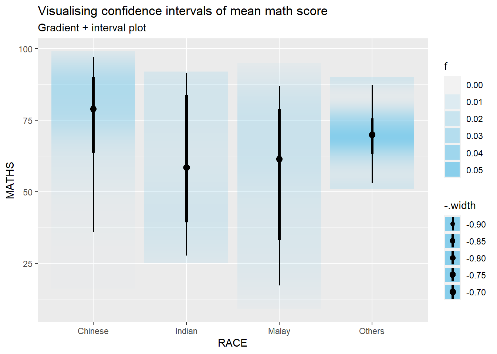

pacman::p_load(tidyverse, plotly, crosstalk, DT, ggdist, gganimate,ggstatsplot,readxl, performance, parameters, see)Hands-on_Ex04
Visual Statistical Analysis with ggstatsplot
Import package and data
library(readr)
exam_data <- read_csv("data/Exam_data.csv")One sample test graph
set.seed(1234)
gghistostats(data=exam_data,x=ENGLISH, type="bayes",
test.values=70,xlab="English score")Two sample mean test
Compare distribution/density of female and male performance in Math test
ggbetweenstats(
data=exam_data,
x=GENDER,
y=MATHS,
type='np',
message=FALSE)
One way ANOVA test
ggbetweenstats(data=exam_data,
x=RACE,
y=ENGLISH,
type='p',
mean.ci=TRUE,
pairwise.comparisons = TRUE,
pairwise.display = 's',
p.adjust.method = 'fdr',
message=FALSE
)
Correlatin test
Can see Pearson correlation coefficient
ggscatterstats(data=exam_data,
x=MATHS,
y=ENGLISH,
marginal = FALSE
)
Significant Test of Association
exam=exam_data %>%
mutate(MATHS_bins=
cut(MATHS,
breaks=c(0,60,75,85,100)))
ggbarstats(data=exam,
x=MATHS_bins,
y=GENDER)
Toyota Corolla case with linear regression
Import the data
resale_car <- read_xls("data/ToyotaCorolla.xls",
"data")
colnames(resale_car) [1] "Id" "Model" "Price" "Age_08_04"
[5] "Mfg_Month" "Mfg_Year" "KM" "Quarterly_Tax"
[9] "Weight" "Guarantee_Period" "HP_Bin" "CC_bin"
[13] "Doors" "Gears" "Cylinders" "Fuel_Type"
[17] "Color" "Met_Color" "Automatic" "Mfr_Guarantee"
[21] "BOVAG_Guarantee" "ABS" "Airbag_1" "Airbag_2"
[25] "Airco" "Automatic_airco" "Boardcomputer" "CD_Player"
[29] "Central_Lock" "Powered_Windows" "Power_Steering" "Radio"
[33] "Mistlamps" "Sport_Model" "Backseat_Divider" "Metallic_Rim"
[37] "Radio_cassette" "Tow_Bar" Build multiple linear regression
model <- lm(Price ~ Age_08_04 + Mfg_Year + KM +
Weight + Guarantee_Period, data = resale_car)
model
Call:
lm(formula = Price ~ Age_08_04 + Mfg_Year + KM + Weight + Guarantee_Period,
data = resale_car)
Coefficients:
(Intercept) Age_08_04 Mfg_Year KM
-2.637e+06 -1.409e+01 1.315e+03 -2.323e-02
Weight Guarantee_Period
1.903e+01 2.770e+01 Check multicollinearity
One way to detect multicollinearity (whether independent variables are highly correlated) is to calculate the variance inflation factor (VIF) for each independent variable.
c <- check_collinearity(model)
plot(c)
Checking normality assumption
Build model1(remove one highly correlated variable of mfg_year)
model1 <- lm(Price ~ Age_08_04 + KM +
Weight + Guarantee_Period, data = resale_car)
check_n <- check_normality(model1)
plot(check_n)
Check model for homogeneity of variances
Significance testing for linear regression models assumes that the model errors (or residuals) have constant variance.
check_v <- check_heteroscedasticity(model1)
plot(check_v)
Complete check
Can also check all the assumptions by one step. Influential observation is an observation in a dataset that, when removed, dramatically changes the coefficient estimates of a regression model
check_model(model1)
Parameter plot
See the coefficient direction and strength in the plot.
plot(parameters(model1))
Visualising Regression Parameters
ggcoefstats(model1,
output = "plot")
Visualize uncertainty of point estimates
point estimate such as mean, addressed with uncertainty like CI se: standard error measures the variability of the sample means, estimate the precision of the sample mean as an estimate of the population mean. sd/sqrt(n-1), n-1 can been thought as degree of freedom
sum_num <- exam_data %>%
group_by(RACE) %>%
summarise(n=n(),
mean=round(mean(MATHS),2),
sd=round(sd(MATHS),2)) %>%
mutate(se=round(sd/sqrt(n-1),2))
sum_num# A tibble: 4 × 5
RACE n mean sd se
<chr> <int> <dbl> <dbl> <dbl>
1 Chinese 193 76.5 15.7 1.13
2 Indian 12 60.7 23.4 7.04
3 Malay 108 57.4 21.1 2.04
4 Others 9 69.7 10.7 3.79knitr::kable(head(sum_num),format='html')| RACE | n | mean | sd | se |
|---|---|---|---|---|
| Chinese | 193 | 76.51 | 15.69 | 1.13 |
| Indian | 12 | 60.67 | 23.35 | 7.04 |
| Malay | 108 | 57.44 | 21.13 | 2.04 |
| Others | 9 | 69.67 | 10.72 | 3.79 |
Standard error visulization
ggplot(sum_num)+
geom_errorbar(
aes(x=RACE,
ymin=mean-se,
ymax=mean+se),
width=0.2,
color='black',
alpha=0.9,
size=1)+
geom_point(aes(x=RACE,
y=mean),
stat='identity',
color='red',
size=2,
alpha=1)+
ggtitle("Standard error of mean
maths score by race")95% Confidence interval
use qnorm(0.975)=1.96 to calculate lower and upper bound
sum_num$RACE <- factor(sum_num$RACE,levels = sum_num$RACE[order(-sum_num$mean)])
ggplot(sum_num)+
geom_errorbar(
aes(x=RACE,
ymin=mean-1.96*se,
ymax=mean+1.96*se),
width=0.2,
color='black',
alpha=0.95,
size=1)+
geom_point(aes(x=RACE,
y=mean),
stat='identity',
color='red',
size=2,
alpha=1)+
ggtitle("95% confidence interval of mean maths score by race")Uncertainty of point estimates with interactive error bars
data <- highlight_key(sum_num)
p <- ggplot(data)+
geom_errorbar(
aes(x=RACE,
ymin=mean-2.32*se,
ymax=mean+2.32*se),
width=0.2,
color='black',
alpha=0.99,
size=1)+
geom_point(aes(x=RACE,
y=mean),
stat='identity',
color='red',
size=2,
alpha=1)+
ggtitle("99% confidence interval of mean maths score by race")
gg <- highlight(ggplotly(p),"plotly_selected")
crosstalk::bscols(gg,DT::datatable(data),widths = 5)Confidence interval plot with ggdist
exam_data %>%
ggplot(aes(x=RACE,y=MATHS,))+
stat_pointinterval()+
labs(
title="Visualising confidence intervals of mean math score",
subtitle = "Mean Point + Confidence-interval plot")Use stat_gradientinterval
exam_data %>%
ggplot(aes(x = RACE,
y = MATHS)) +
stat_gradientinterval(
fill='skyblue',
show.legend=TRUE
)+
labs(
title = "Visualising confidence intervals of mean math score",
subtitle = "Gradient + interval plot"
)
Hypothetical Outcome Plots
transition_states means create sequence of frames to have animation of changes